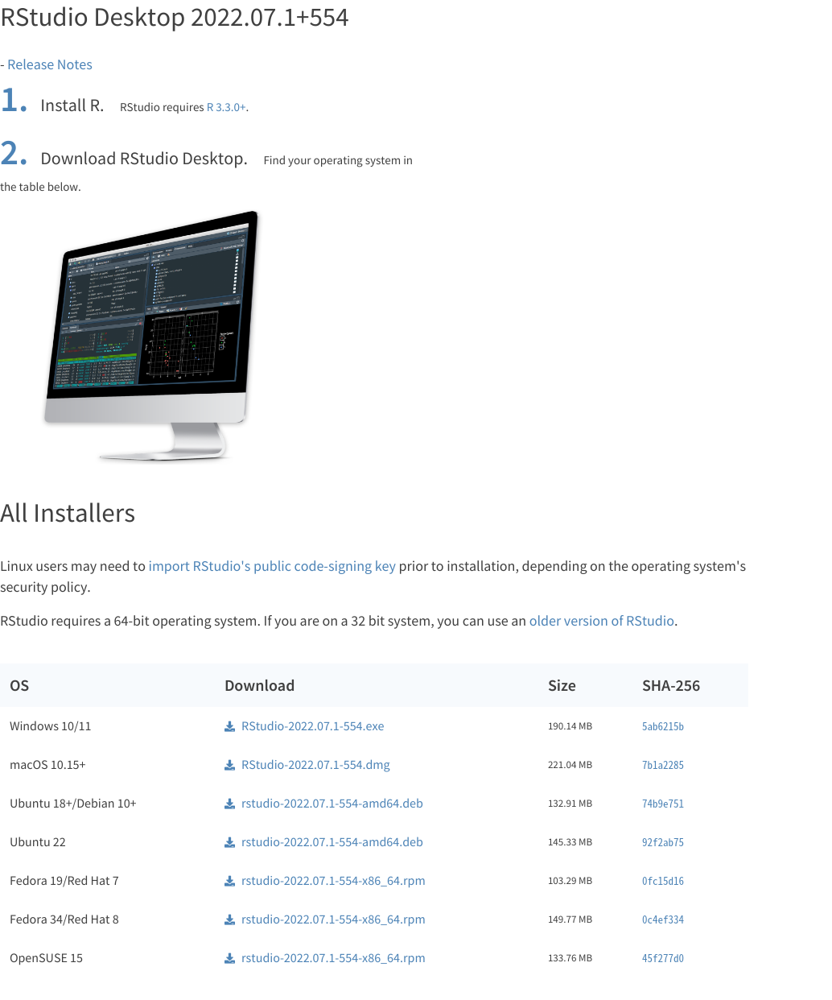
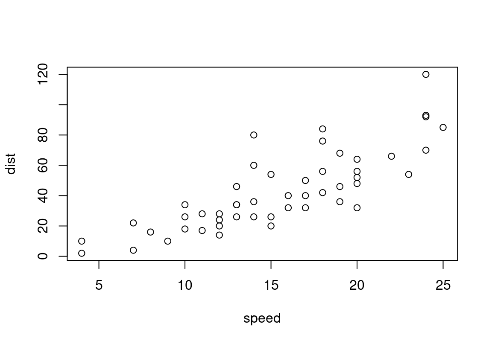

Chapter 1 R 설치 및 시작
1.1 R 소개
R은 통계 계산과 그래픽을 위한 프로그래밍 언어이자 소프트웨어 환경이다. R은 1960년대와 1970년대 Bell 연구소에서 개발된 S라는 데이터 처리 언어에 기반을 두고 있다. 1990년대 중반 뉴질랜드 오클랜드 대학의 로스 이하카와 로버트 젠틀맨에 의해 시작되어 현재는 R의 핵심 기능은 R 코어 팀이, 다양한 추가 기능은 자발적 기여자들에 의해 개발되고 있다. R은 GPL 하에 배포되는 공개 소프트웨어로 누구나 자유롭게 이용할 수 있다.
R은 빅데이터 분석에 널리 사용되고 있으며, 패키지 개발이 용이하여 통계 분석가들 사이에서 통계 소프트웨어 개발에 많이 쓰이고 있다.

R은 데이터 조작, 계산, 그래픽 표현을 위한 소프트웨어이다. R의 주요 기능은 다음과 같다.
- 효율적이고 편련한 데이터 조작 및 처리 기능
- 데이트를 다양한 그래프로 표현해주는 데이터 시각화 기능
- 통계 분석 및 데이터 마이닝 알고리즘 수행 기능
- 분석 결과를 문서 및 발표 자료로 생성하는 기능
- 간단하며 효과적인 프로그래밍 언어로서의 기능
이 장에서는 R을 설치하고 실행하는 방법과 R의 개괄적인 기능을 소개한다.
1.2 R 설치하기
1.2.1 R 배포판 내려받기
R을 설치하기 위해서는 R 배포판을 먼저 구해야 한다. R은 공개 소프트웨어이므로 무료로 R 공식 웹 사이트 (http://www.r-project.org/)에서 내려받을 수 있다.
R 공식 사이트의 첫 화면의 내용 중 download R 을 클릭하면 R 배포판을 내려받기할 CRAN 미러를 선택하는 화면으로 이동하게 된다.

지리적으로 가까운 CRAN 미러 서버를 선택하거나, 맨 위의 “0-Cloud”를 선택한다. 그러면 설치할 R 배포판을 선택하는 화면으로 이동한다.

R 배포판을 선택하는 화면에서 Download R for Windows를 클릭하여 윈도우용 배포판을 선택한다.1

윈도우용 배포판 중 어떤 항목을 내려받을 것인지를 물어보는데 처음 설치하는 것이므로 Base를 선택한다.

그러면 32/64bits 겸용 윈도우용 R 바이너리 파일을 내려받을 수 있는 화면으로 이동한다. Download R x.x.x for windows를 클릭하여 배포판을 내려받는다. 여기서 x.x.x는 내려받기를 하는 R 배포판의 버전을 의미한다.
1.2.2 설치에 앞서 주의할 사항
한글 윈도우에서 R과 RStudio를 설치하여 사용할 때 이유를 알 수 없는 여러 문제가 발생할 수 있다. 이러한 문제의 대부분은 파일과 디렉토리(폴더)의 경로명에 한글이 들어간 경우에 발생한다. 특히 윈도우 사용자 이름이 한글인 경우 이러한 문제가 빈번히 발생하는데, R이나 RStudio가 사용자 폴더의 하위 폴더에 필요한 파일과 디렉토리를 만들기 때문이다.
이러한 문제를 미연에 방지하려면 설치 전에 윈도우 사용자 이름이 한글인지 확인하고, 한글이면 영문 사용자 이름으로 관리자 계정을 하나 더 만들어 그 계정으로 R과 RStudio의 설치를 진행하는 것이 좋다.
물론 한글 사용자 이름을 사용하더라도 환경변수의 임시 디렉토리 설정을 변경하여 발생할 수 있는 대부분의 문제를 해결할 수 있지만, 새로운 패키지나 함수를 사용할 때마다 이러한 문제가 잠복되어 있다가 다른 방식으로 다시 발생할 수 있다. R에 대한 이해가 높지 않은 초심자의 경우 이러한 문제가 발생하면 문제의 원인을 파악하기 어렵다. 그렇기 때문에 영문 이름으로 된 관리자 권한의 사용자로서 R과 RStudio를 설치하기를 강력히 권장한다.
1.2.3 R 설치하기
내려받은 R 설치 파일을 실행시켜 R을 설치한다.
설치 과정 중 사용할 언어 선택 화면이 나타나면 한국어를 선택한 후 [확인]을 클릭한다.
GNU 라이선스 정보 화면이 나타나면 [다음]을 클릭한다.
설치할 위치를 선택하는 화면이 나타나면 [찾아보기]를 클릭하여 적절한 설치 폴더를 직접 지정하거나 기본 값으로 설치한다. [다음]을 클릭한다.
구성 요소 설치를 묻는 화면이 나타나면 위쪽에 있는 선택 리스트를 이용하여
32-bit 사용자 편의를 위한 쉬운 설치또는64-bit 사용자 편의를 위한 쉬운 설치중 자신의 윈도우즈 시스템이 32-bit 윈도우인지 64-bit 윈도우인지에 따라 선택한다. 그리고 [다음]을 클릭한다.(자신의 윈도우 종류를 모르겠으면사용자 편의를 위한 쉬운 설치를 선택하여 전체를 다 설치하여도 된다. Windows 10을 기준으로 몇 bits 운영체제인지를 확인하려면, 시작 메뉴에서 [제어판]을 선택한 후 [시스템]-[정보]를 선택하면시스템 종류에 해당 정보가 나온다.)
R을 시작할 때의 사용하는 스타트업 옵션을 조정할 것인지를 묻는 화면이 나온다. 지금은 그냥
No (기본값 사용)을 선택하도록 한다. 그리고 [다음]을 클릭한다.시작 메뉴 폴더를 선택하도록 하는데, 기본 값인 `R’을 이용하도록 한다. [다음]을 클릭한다.
추가 사항 적용은 특별한 요구가 없는 한 기본 설정을 이용하도록 한다. [다음]을 클릭하면 설치가 실행된다.
설치가 완료되면 [완료]를 클릭한다.
윈도우즈 시작 메뉴에 가면 R 폴더가 생성되어 있고 그 안의 메뉴를 클릭하면 R이 실행된다.

1.3 RStudio
R 배포판이 제공하는 기능만으로도 기본적인 프로그래밍이나 데이터 분석이 가능하다. 그러나 프로그래밍이나 데이터 분석 작업이 복잡해지면 R을 좀 더 편리하게 사용할 수 있는 통합된 개발 환경(IDE: Integrated Development Environment)이 큰 도움이 된다.
RStudio는 R을 위한 강력한 통합 개발 환경을 제공해 준다. R과 마찬가지로 공개 소프트웨어로 누구나 자유롭게 이용할 수 있다. 따라서 많은 R 사용자가 RStudio를 사용하고 있다.
1.3.1 RStudio 설치
RStudio 웹페이지(http://www.rstudio.com/product/rstudio/download/)에 접속하면 RStudio를 내려 받을 수 있다. RStudio는 데스크탑용과 서버용이 있다. 데스크탑 버전은 개별 사용자를 위한 버전이고, 서버용 버전은 여러 사람이 동시에 데이터를 분석하거나 원격에서 데이터를 분석하기에 좋은 환경이다. 서버용 버전과 관련된 정보는 RStudio 홈페이지를 참조하기 바란다.
RStudio Desktop은 무료용 Open Source License (Free) 버전과 상업용 Commercial License 버전이 있다. 데스크탑용 RStudio는 무료용이나 상업용이나 기능상 차이는 없다. 상업용에는 별도의 기술 지원이 추가된다. Open Source License (Free)에서 [DOWNLOAD]을 클릭하여 다운로드 페이지로 이동한다.
그러면 자동으로 접속자의 환경을 파악하여 사용자가 사용하는 운영체제에 적절한 RStudio 데스크탑 버전을 선택해 준다. 윈도우즈 사용자들은 [DOWNLOAD RSTUDIO FOR WINDOWS]가 나타날 것이다. 이를 클릭하면 RStudio가 다운로드 될 것이다. 만약 다른 운영체제의 RStudio가 필요하면 하단의 목록에서 적절한 배포한을 선택한다. (RStudio는 공개 소프트웨어로 프로그램 소스 파일도 함께 공개되어 있어, 같은 페이지 하단에서 볼 수 있는 바와 같이 RStudio 소스를 내려받을 수도 있다.)

내려받은 파일을 실행하면 RStudio 설치를 완료할 수 있다.
1.4 RStudio로 R 시작하기
RStudio를 설치하면 윈도우 시작메뉴에 RStudio를 실행할 수 있는 메뉴가 나타난다. 이를 실행하면 다음 그림처럼 RStudio가 실행된다.
기본 설정은 왼편에 R 콘솔이나 코드 편집기 창들이 위치하고, 오른편에 작업 환경, 명령어 히스토리, 파일, 그림, 패키지, 도움말 관련 창들이 위치하도록 되어 있다.
1.4.1 R 콘솔과 프롬프트
R은 기본적으로 텍스트 기반의 명령문을 입력받아 명령문에 대한 응답하는 방식으로 작동한다. R 콘솔은 사용자의 명령문을 받고 텍스트 기반 결과물을 출력하는 곳이다.
R 콘솔은 사용자의 명령을 받을 준비가 되어 있다는 것을 나타내기 위해 명령 프롬프트인 `>’ 기호를 표시한다. 프롬프트가 보이면 R 명령문을 입력하고 Enter 키를 누르면 입력된 R 명령문이 R에 전달되어 실행된다.
명령문의 실행 결과가 텍스트이면 R 콘솔에 결과가 나타나고 그래프이면 오른편의 Plots 창에 그래프가 나타난다.
이 책에서는 아래에 나오는 형태로 R 콘솔의 입출력을 표시한다. >가 있는 행은 사용자가 입력한 행이고 >가 없는 행은 R의 출력 결과로 표시한다.
R을 맛보기 위해 R이 제공하는 cars 데이터에 대해 기초적인 분석을 수행해보자. 이 절에서 이용되는 R 명령어에 대해서는 현재 시점에선 이해할 필요가 없다. 이 책이 진행되면서 차근차근 설명될 것이다.
먼저 다음과 같이 cars 데이터를 화면에 출력해 보자. 콘솔에 cars라고 입력 후 Enter를 입력한다.
> cars speed dist
1 4 2
2 4 10
3 7 4
4 7 22
5 8 16
6 9 10...cars 데이터는 자동차의 속력(speed)과 제동 거리(dist)에 대한 50 개의 관찰값으로 구성되어 있다. cars 데이터에 대하여 자세한 정보를 얻어보자. ?를 명령어에 붙이면 명령어에 대한 설명을 오른편의 Help 창에 도움말이 나타난다.
> ?carssummary() 함수를 이용하여 자동차의 속력과 제동 거리에 대한 최소값, 최대값, 평균, 사분위수 등 기본 통계치를 구해 보자.
> summary(cars) speed dist
Min. : 4.0 Min. : 2.00
1st Qu.:12.0 1st Qu.: 26.00
Median :15.0 Median : 36.00
Mean :15.4 Mean : 42.98
3rd Qu.:19.0 3rd Qu.: 56.00
Max. :25.0 Max. :120.00 자동차의 속력과 제동 거리의 상관 관계를 보기 위해 plot() 함수를 이용하여 산점도(scatter plot)를 그려 본다.
> plot(cars)
자동차의 속력과 제동 거리의 관계를 선형 모형으로 나타내기 위해 다음 명령어를 이용하여 cars 데이터에 대한 선형회귀분석을 수행한다.
> lm.cars <- lm(dist ~ speed, data=cars)
> lm.cars
Call:
lm(formula = dist ~ speed, data = cars)
Coefficients:
(Intercept) speed
-17.579 3.932 제동 거리를 속도로 회귀분석해 보면 절편이 -17.579이고 기울기가 3.932가 됨을 알 수 있다.
앞에 그린 산점도에 abline() 함수를 이용하여 회귀 적합선을 그려 넣어 본다.
> plot(cars)
> abline(lm.cars, col="blue")본 절에서 수행한 명령어가 궁금한 독자는 help(명령어)나 ?명령어를 R 콘솔에 입력해 보라. 관련 도움말을 얻을 수 있을 것이다.
1.4.2 R 콘솔 사용과 관련된 몇 가지 팁
입력 시 주의 사항
R 명령문은 대문자와 소문자를 다른 문자로 간주한다. 그러니 함수명이나 변수명을 입력할 때 대소문자가 틀리지 않도록 해야 한다.
R 명령문 입력시 가장 많이 틀리는 부분이 ' ', " ", ( ), { } 등이 서로 짝이 맞지 않는 경우다.
R 명령문을 입력하고 Enter를 입력하였는데, 결과가 출력되지 않고 프롬프트가 +로 바뀌는 경우에는, 입력한 명령문이 완전하지 않기 때문에 나머지 입력을 받기 위해 기다리고 있다는 것을 나타낸다.
- 주로 앞서 설명한
' '," ",( ),{ }등이 서로 맞지 않아 발생하는 경우가 많다. - 이를 해결하는 두 가지 방법이 있다. 명령문의 나머지를
+프롬프트 뒤에 입력한 후 Enter를 입력하여 명령문을 마무리하거나, Esc를 눌러 지금까지 입력된 내용을 취소하는 것이다.
RStudio의 콘솔은 몇 가지 편의 기능을 제공한다. 이 기능들을 이용하면 작업의 생산성을 향상시킬 수 있다.
코드 완성
RStudio 콘솔에서 Tab 키를 사용하여 코드를 자동 완성시킬 수 있다.
- 예를 들어 앞 절에 나온
lm.cars변수를 사용하는 예제를 수행한 뒤라면,lm.c까지만 입력한 후 Tab 키를 눌러보자. 그러면 자동으로 변수의 전체 이름을 완성해 줄 것이다. - 코드 완성 기능을 이용하여 변수 이름을 입력하는 것을 습관화 하면 좋다. 변수의 이름을 잘못 입력하여 발생하는 오류를 줄일 수 있다.
코드 완성 기능은 함수에도 이용할 수 있다. sum까지만 입력한 후 Tab을 눌러보자. 그러면 다음 그림 처럼 sum으로 시작하는 함수의 목록이 나타난다. 목록 중 원하는 함수를 선택하면 해당 함수 이름을 콘솔에 자동 완성해 준다. 필요한 함수의 정확한 이름이 생각나지 않을 때 매우 유용하다.

코드 완성 기능은 함수의 인수 입력에도 이용할 수 있다. summary(라고 입력한 후에* Tab 키를 누르면 함수 인수의 목록과 설명이 나온다. R 함수들의 인수 이름을 정확히 기억하는 것은 쉽지 않다. 코드 완성 기능을 오류 없이 정확한 명령어를 빠르게 입력할 수 있도록 도와준다.

1.4.3 R 스크립트 파일 만들기
R 콘솔에서 대화 형식으로 명령문을 입력하고 결과를 받는 것은 단순한 작업의 경우에는 편리하지만, 복잡한 분석을 위해 입력해야 할 명령문이 많거나 추후에 동일한 또는 유사한 작업을 할 예정이라면 R 스크립트 파일을 작성하여 명령문을 저장해 두는 것이 좋다.
R 스크립트는 한번에 실행할 명령문을 단순한 텍스트 형식으로 기술한 파일이다. R 스크립트에는 실행할 명령문을 한 줄씩 입력한다. R은 스크립트를 읽어들여서 줄바꿈이 되는 곳을 기준으로 한 줄씩 처리한다.
summary(cars)
lm.cars <- lm(dist~speed, data=cars)
lm.cars
plot(dist~speed, cars)
abline(lm.cars)RStudio 코드 편집기
RStudio의 코드 편집기는 R 스크립트 등 다양한 파일을 작성하는 것을 도와준다. 문법 강조 표현, 코드 완성 등 다양한 기능들을 가지고 있다. 또한 코드 편집기에 입력한 R 명령을 콘솔에서 즉시 실행해 볼 수도 있다.
많은 R 사용자가 R 명령을 콘솔에서 직접 실행하는 것보다 코드 편집기에서 스크립트로 작성한 후 실행하는 것을 선호한다. 왜냐하면 코드 편집기를 이용하면 실행한 R 명령을 파일에 저장해 둘 수 있으므로, 나중에 동일한 코드를 재실행할 수 있을 뿐 아니라 함수 등으로 쉽게 변환할 수 있기 때문이다.
RStudio에서 지원하는 주요 파일 형식
RStudio는 다음 형식의 파일에 대하여 문법 강조 표현 및 특화된 코드 편집 기능을 제공한다.
- R 스크립트: R 명령어 코드와 주석만을 포함하는 파일이다.
- R 노트북: R 명령어와 함께 실행 결과를 Mathematica 노트북 형태로 저장해주는 파일이다.
- R Markdown 문서: 마크다운이라는 매우 단순한 형식으로 문서 모양을 지정할 수 있다. R 명령어와 마크다운이 같이 한 문서에 사용되어 동적인 문서를 생성한다. R 마크다운 문서는 HTML, 워드 문서, PDF 문서로 변환이 가능하다.
- Shiny Web App: RStudio에서 개발한 R을 이용해 웹 응용을 쉽게 개발하도록 지원하는 웹 응용 개발 체계이다.
- R Sweave 문서: LaTex 문서 내에 R 명령어를 포함하여 동적인 LaTex 파일을 만들어 주는 형식이다.
- R HTML 문서: HTML 문서 내에 R 명령어를 포함하여 동적으로 HTML 파일을 만들어 주는 형식이다.
- R Presentation 문서: HTML5 기능을 이용하여 HTML 기반의 동적인 프리젠테이션 파일을 만들어 주는 파일 형식이다.
- R Documentation 문서: R 프로그램에 대한 문서화를 지원해 주는 파일 형식이다.
스크립트 파일 만들기
일반적인 사용자는 보통 R 스크립트 파일, R 마크다운 파일, R 프리젠테이션 파일을 많이 사용한다. RStudio에서 새로운 파일을 생성하려면 File->New File 메뉴를 이용하거나 그림처럼 새 파일을 만드는 명령 단추를 클릭한다.

기존 파일을 열기 위해서는 File->Open File… 또는 File->Recent Files 메뉴를 이용하거나, 파일 열기 명령 단추를 클릭한다.
RStudio에서 여러 파일을 열게 되면 탭으로 각 파일을 표시해 준다. 매우 많은 파일이 열려서 탭을 모두 표시할 수 없으면 우측 상단에 >> 또는 좌측 상단에 << 아이콘이 표시되어 보이지 않는 파일 탭 사이를 전환할 수 있도록 해 준다.
문자 찾기와 바꾸기
코드 편집기는 문서의 문자를 찾거나 바꾸는 기능을 지원한다. Ctrl +F 단축키를 이용하거나 Edit->Find 또는 Edit->Replace and Find 메뉴를 이용한다.
코드 실행
RStudio는 코드 편집기의 코드를 직접 실행시킬 수 있다. 실행할 코드는 콘솔에 자동 입력되어 실행되고 그 결과도 콘솔에 표시된다.
코드의 한 줄 또는 일부 여러 줄을 실행하려면 그 줄을 선택한 후 코드 편집기의 도구 모음에서 Run를 실행하거나 Ctrl+Enter 키를 이용한다.
코드 전체를 실행하기 위해서는 코드 편집기의 도구 모음에서 Source -> Source with Echo를 실행하거나 Ctrl+Shift+Enter 키를 이용한다.
코드 편집기의 도구 모음에서 그냥 Source를 실행하면 파일의 명령문이 실행은 되나 결과가 콘솔에 출력되지 않는다.
주석 처리
R 스트립트에 명령문이 아닌 내용을 입력하고 싶으면 #을 앞에 사용하여 주석 처리를 한다. # 뒤에 입력된 내용은 명령문으로 간주하지 않고 무시한다.
주석문은 명령문의 의미를 나중에 이해하기 쉽도록 기술하거나, R 스크립트 개발 과정에서 디버깅이나 다른 이유로 명령문을 실행에서 제외할 때 사용한다.
직접 #를 입력하는 방법뿐 아니라, Edit->Comment/Uncomment Lines 메뉴나 코드 편집기 상단의 코드 명령 단추에서 해당 메뉴를 이용하면 선택한 코드 부분 전체를 주석 처리하거나 주석 처리를 취소할 수 있다.
들여쓰기
코드를 작성할 때 동일한 논리적 단위들을 동일하게 들여쓰기하면 코드를 읽기가 쉬워진다. RStudio는 코드 작성시 현재의 들여쓰기 옵션에 따라 자동으로 들여쓰기를 해 준다.
코드를 작성한 후 들여쓰기를 직접 조정하고 싶으면, 코드를 선택한 후 Tab 키를 누른다. 그러면 Tab 키를 누른 횟수만큼 들여쓰기가 된다.
반대로 Shift+Tab 키를 누르면, 누른 횟수만큼 내어쓰기가 된다.
참고로 RStudio는 Tab 한 회에 공백 2문자만큼 들여쓰기를 한다. 이를 조절하고 싶으면 [Toos]-[Global Options]-[Code] 메뉴에 가서 Tab 한 회당 들여쓰기할 공백 문자 수를 조절하면 된다.
이 책에서는 윈도우에 R을 설치한다고 가정한다. R 배포판은 설치 방법이나 그래픽 인터페이스의 몇 가지 기능을 제외하고 운영 체제에 따른 차이는 없다. ↩︎